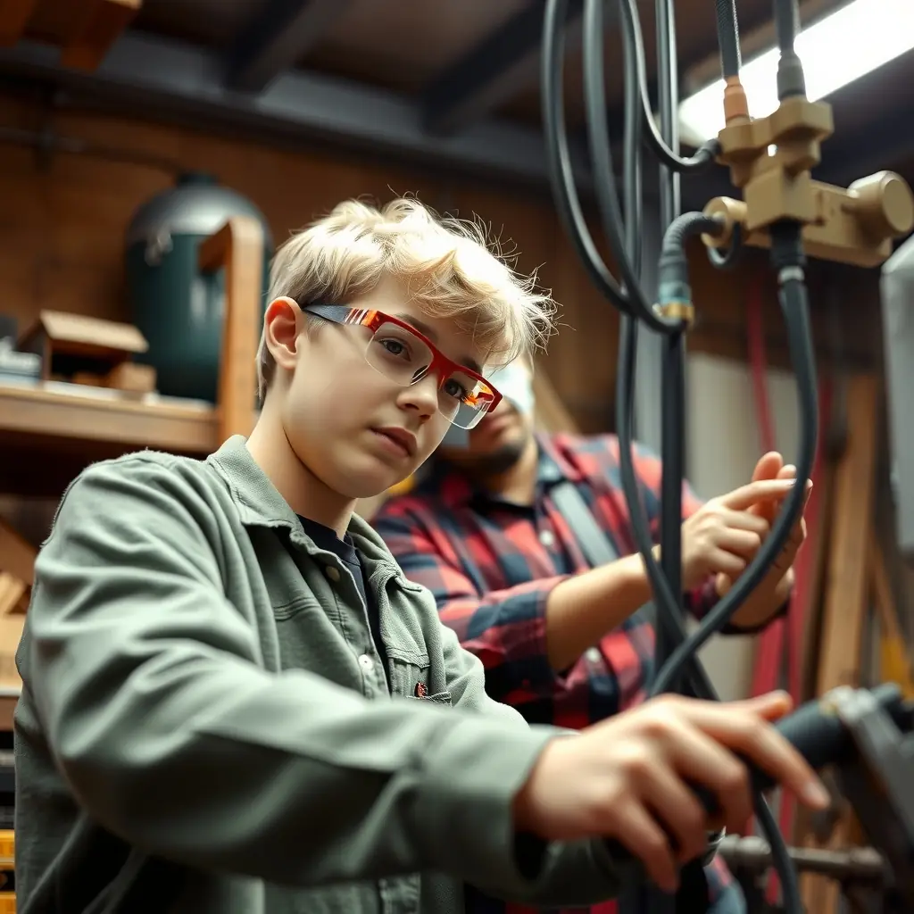
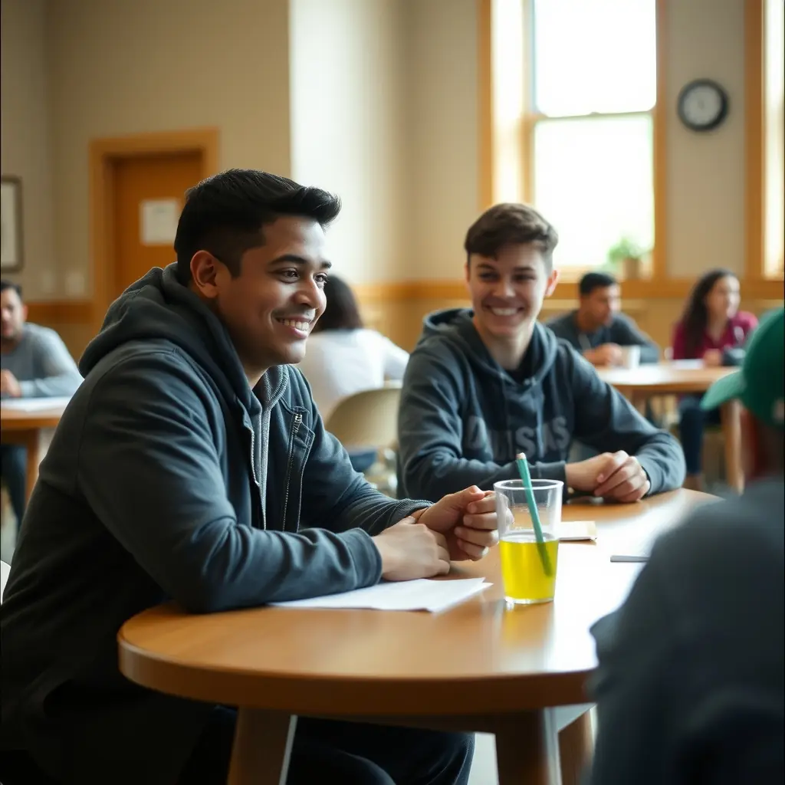
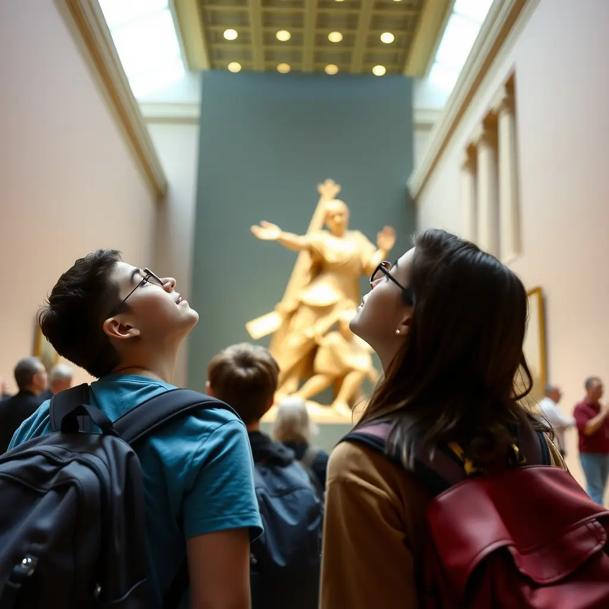
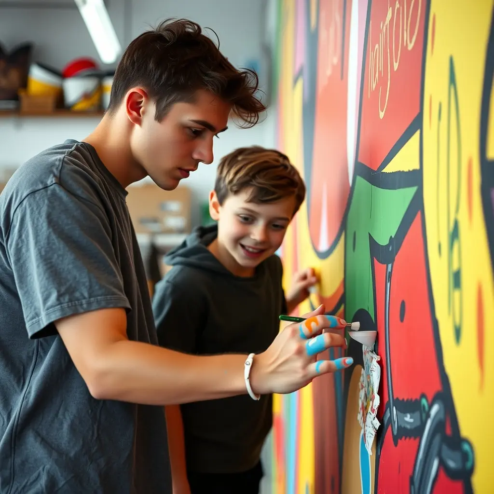
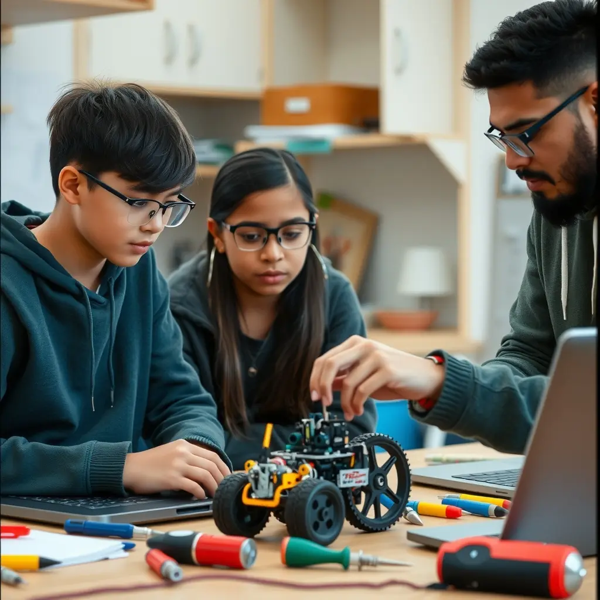

P.A.T.H. takes teens into real workshops, offices, campuses and conversations, so choosing life after high school stops being a guess.
Become a mentor Sign up a teen
A lot of seniors don't lack talent. They lack a look at what's out there. A career day with a slideshow doesn't fix that.
So we skip the slideshow. Our teens pick up the tools, ask the awkward questions and spend real time with people doing the work.

A steady adult in your corner who answers honestly.
Spend real hours in local businesses and workshops.
See the dorms, the classes and the people. Decide for yourself.

Big ideas, up close, with your crew.
Teamwork and leadership that show on any application.
Founders, nurses, welders and designers tell it like it is.
Meet careers, trades and paths you didn't know existed.
Hands-on moments spark the questions that matter.
Confidence shows up once you've seen it's possible.
Real goals and the first intentional steps toward them.
Young people cannot pursue opportunities they do not know exist.
Some adolescents approach high school graduation with uncertainty about their future, not because they lack ability or potential, but because they may not have had enough opportunities to discover their interests or experience different possibilities firsthand.
Traditional career conversations may introduce students to occupations, but P.A.T.H. seeks to move beyond simply telling young people what is available by allowing them to experience, explore, ask questions, connect with mentors, and discover possibilities for themselves.
P.A.T.H. believes that exposure creates possibility, exploration sparks curiosity, and meaningful experiences can inspire purpose. When adolescents are intentionally exposed to a broad range of careers, industries, hobbies, educational opportunities, skilled trades, entrepreneurship, creative pursuits, mentors, and life experiences, they are more likely to:
If P.A.T.H. provides adolescents with meaningful exposure to diverse careers, hobbies, educational pathways, skilled trades, entrepreneurship, mentorship, and real-world experiences, then young people will have greater opportunities to discover their interests, identify their strengths, expand their understanding of what is possible, and develop confidence in their abilities. As a result, they will be better equipped to establish meaningful goals, make informed decisions, and pursue purposeful pathways beyond high school.
We help every young person find a path that inspires them, whether that leads to college, technical training, entrepreneurship, a skilled trade, employment, creative pursuits, or a meaningful lifelong hobby.
Campus visits, student conversations and mentors who share their own journeys.
Meet working tradespeople, try the work and visit training programs.
Time inside local businesses and talks with the people who built them.

Art, music, design and media explored alongside working creatives.
Internships, job shadows and mentorships with professionals.

Hands-on interests worth keeping for life, from robotics to the outdoors.
The mission of P.A.T.H. (Preparing Adolescents Through Horizons) is to inspire, expose, and empower young people to explore the possibilities available to them beyond high school. Through meaningful experiences, mentorship, career exploration, hands-on activities, and exposure to diverse opportunities, P.A.T.H. helps adolescents discover their interests, develop their strengths, and build the confidence needed to create a purposeful future.
We believe that exposure can spark curiosity, curiosity can create motivation, and motivation can lead to purpose.
The vision of P.A.T.H. is to create a future where every young person has the exposure, encouragement, and opportunities needed to discover their passions, recognize their potential, and confidently pursue a meaningful path beyond high school.
We envision adolescents entering adulthood with a sense of purpose, an understanding of the possibilities available to them, and the motivation to transform their interests and talents into fulfilling educational, career, entrepreneurial, or personal pursuits.
Families trust us with their young people. These are the commitments we're building into every program.
Programs for families, partnerships for schools, and ways for sponsors to open doors for young people.
🔒 Card details are entered with our payment provider, never on this site.
Demo: this button will open the secure payment page (Stripe, PayPal or your chosen provider).
Young people in high school, grades 9 through 12.
Please contact us and we'll walk you through how participation works and any costs involved.
Activities take place in and around our community, with a regular meeting place shared with families in advance. Schedules are always sent out ahead of time.
Host a job shadow or internship, speak to students, or become a mentor. Use the contact form below.
Mentor a teen, host a shadow day, speak to students, sponsor a trip, or sign up a young person you care about.
[Meeting location, City, State]
[email@yourdomain.org] · [Phone]